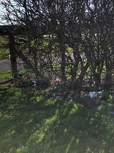
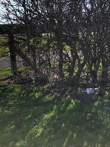
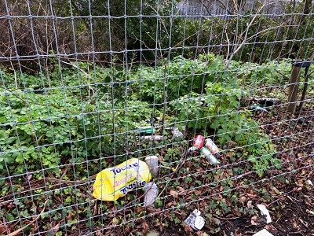

"Only when the last tree is cut down, the last fish eaten and the last stream poisoned, you will realize that you cannot eat money."
Gallery
These images were taken on my daily commute to work. I get off the Dart at Ballsbride and take the walkway along the River Dodder and every morning I'm sad to see plastic bottles floating in the river, caught in the reeds beside Ducks and Swans and other wildlife.
 

These pictures were taken while out for a walk around my local area. The streets are lined with discarded wrappers and bottles
I took these pictures on a walk to St.Annes Park in Raheny. You can see again cans, plastic bags, plastic wrappings and coffee cups discarded on what should be a beautiful nature walk
 Back to Top
Contact Us: +353 23746474
Zero Waste Dublin Offices, Blanchardstown Road North, Dublin 15,D15 YV78
Copyright ©Michael McMahon.
Follow us on: